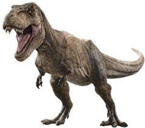

Tyrannosaurus adalah sebuah genus dinosaurus teropoda yang tergolong ke dalam klad Coelurosauria.
Spesies Tyrannosaurus rex (sering dijuluki T. rex atau T-Rex; "rex" berarti "raja" dalam bahasa Latin) adalah
salah satu teropoda besar yang paling dikenal oleh khalayak luas.